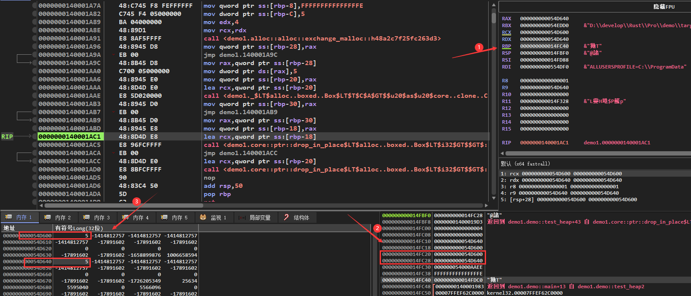

Rust逆向之所有权
1.基本介绍
在写代码的过程中，申请内存资源是必须且经常的事情。对于所申请的内存资源的释放，不同编程语言有不同的处理方式。
对于C/C++这样的语言，需要开发人员手动释放内存资源。但是，开发人员手动释放内存资源的时候，很容易出现一些错误。以下是C/C++在资源释放方面经常会出现的一些错误，前三个往往是造成程序出现漏洞，而最后一个会造成资源的浪费。
void test_function() {
// use after free
// 申请内存
int *p = (int*)malloc(sizeof(int));
// 其他代码
//释放内存
if (p != NULL) free(p);
// 其他代码
// 向内存写入数据
*p = 1;
// double free
// 申请内存
int *p1 = (int*)malloc(sizeof(int));
// 其他代码
// 释放内存
if (p1 != NULL) free(p1);
// 其他代码
// 释放已经释放的内存
free(p1);
// null pointer dereference
// 申请内存
int *p2 = (int*) malloc(sizeof(int));
//其他代码
// 释放内存
if (p2 != NULL) {
free(p2);
p2 = NULL;
}
// 其他代码
// 释放NULL
free(p2);
// 未释放内存
// 申请内存
int *p3 = (int *) malloc(sizeof(int));
if (p3 != NULL) {
*p3 = 1;
}
}对于Java这样语言，是通过JVM的自动内存回收功能来实现内存资源的释放。但是，这种方式会降低程序运行时的效率。
为了解决上面的问题，Rust提出了所有权的概念。所有权是Rust最有特色的一个功能，作为内存安全的语言，它的内存安全就依赖于其所有权功能。该功能可以让Rust在没有垃圾回收机制的前提下，保证程序的内存安全。
Rust的所有权通过以下三条规则，在编译阶段对Rust代码进行分析。以保证内存资源的正确释放，从而避免内存资源的浪费以及可能带来的安全问题。
Rust中的每一个值都有一个对应的变量作为它的所有者
在同一时间内，值有且仅有一个所有者
当所有者离开自己的作用域时，它持有的值就会被释放掉
因为是编译阶段的机制，所以所有权功能对变量的检查不会体现在二进制文件中。
2.移动(move)
变量移动是实现上面说的所有权功能的三条规则的基础，也是Rust的一个特色。如果一个变量没有实现Copy这个trait。那么在复制的时候，将会移动该变量，导致该变量无效，后续对该变量会导致编译出错。比如下面的代码：
fn test_move() {
let x = 5;
let y = x;
let z = x;
let s = String::from("hello");
let s1 = s;
let s2 = s;
}由于i32类型的变量实现了Copy trait，所以在执行let y = x；的时候，变量x的值会被复制到变量y中，后续可以继续使用x。而变量s没有实现Copy trait，所以在执行let s1 = s;的时候，会导致变量s移动到s1中，后续对s的使用会在编译的时候出现以下错误：
error[E0382]: use of moved value: `s`
--> src\main.rs:16:14
|
14 | let s = String::from("hello");
| - move occurs because `s` has type `String`, which does not implement the `Copy` trait
15 | let s1 = s;
| - value moved here
16 | let s2 = s;
| ^ value used here after move
|该错误表明，由于String类型的变量s没有实现Copy trait，从而导致s进行了移动。继续使用移动以后的变量，就导致了上述错误。以下是Rust中，默认实现了Copy trait的变量类型：
所有整数类型，比如i32
仅拥有两种值(true和false)的布尔类型：bool
字符类型: char
所有的浮点类型，比如f64
所有字段都具有Copy trait的元组
以下的代码是一个变量移动的例子，
fn test_move() {
struct Test {
x: i32,
y: i32,
}
let t = Test {
x: 3,
y: 4,
};
let t1 = t;
let y = t1.y;
} 对应的汇编代码如下，从汇编代码可以看出来。在发生变量移动的时候，其实并没有进行变量的赋值，也就是说let t1 = t;这行代码并没有真的执行。从内存的角度看，后面对变量t1的使用，其实是直接使用变量t内存地址中保存的数据。
.text:0000000140001920 demo__test_move proc near
.text:0000000140001920
.text:0000000140001920 sub rsp, 10h
.text:0000000140001924 mov dword ptr [rsp+4], 3 ; 为变量t赋值
.text:000000014000192C mov dword ptr [rsp+8], 4
.text:0000000140001934 mov eax, [rsp+8] ; eax=t1.y
.text:0000000140001938 mov [rsp+0Ch], eax ; y=t1.y
.text:000000014000193C add rsp, 10h
.text:0000000140001940 retn
.text:0000000140001940 demo__test_move endp对于实现了Clone(克隆) trait，而没有实现Copy trait的变量。想要实现变量的复制，可以像下面的代码一样，调用clone函数来实现。由于现在对于t1的赋值，是通过t.clone()来克隆一个新的变量，所以变量t没有被移动，后续对变量t的使用就没有问题。
fn test_clone() {
#[derive(Clone)]
struct Test {
x: i32,
y: i32,
}
let t = Test {
x: 3,
y: 4,
};
let t1 = t.clone();
let y = t.y;
}对于汇编代码如下，这里可以看到。对于实现Clone trait的变量，在调用clone方法的时候，会将变量首地址作为第一个参数，然后调用clone函数。这里的clone函数test_clone__impl$0__clone，是针对结构体Test的函数。也就是说，对变量实现Clone trait的时候，Rust会为这个变量实现一个clone函数。后续将这个函数的返回值，赋值到一块新的内存区域中，来实现变量的克隆。
.text:0000000140001950 demo__test_clone proc near
.text:0000000140001950
.text:0000000140001950 sub rsp, 38h
.text:0000000140001954 mov dword ptr [rsp+24h], 3 ; 为变量x赋值
.text:000000014000195C mov dword ptr [rsp+28h], 4
.text:0000000140001964 lea rcx, [rsp+24h] ; demo::test_clone::Test *
.text:0000000140001969 call demo__test_clone__impl$0__clone
.text:000000014000196E mov [rsp+2Ch], eax ; 使用返回值为变量t1赋值
.text:0000000140001972 mov [rsp+30h], edx
.text:0000000140001976 mov eax, [rsp+28h] ; eax=t.y
.text:000000014000197A mov [rsp+34h], eax ; y=t.y
.text:000000014000197E add rsp, 38h
.text:0000000140001982 retn
.text:0000000140001982 demo__test_clone endp而test_clone__impl$0__clone函数也很简单，只是将变量t的值取出，作为返回值：
.text:0000000140001AD0 ; demo::test_clone::Test __fastcall demo::test_clone::impl_0::clone(demo::test_clone::Test *)
.text:0000000140001AD0 demo__test_clone__impl$0__clone proc near
.text:0000000140001AD0
.text:0000000140001AD0 sub rsp, 10h
.text:0000000140001AD4 mov rax, rcx ; rax=变量t的地址
.text:0000000140001AD7 mov [rsp+8], rax
.text:0000000140001ADC mov ecx, [rax] ; ecx=t.x
.text:0000000140001ADE mov eax, [rax+4] ; eax=t.y
.text:0000000140001AE1 mov [rsp], ecx ; 保存t.x
.text:0000000140001AE4 mov [rsp+4], eax ; 保存t.y
.text:0000000140001AE8 mov eax, [rsp] ; eax=t.x
.text:0000000140001AEB mov edx, [rsp+4] ; edx=t.y
.text:0000000140001AEF add rsp, 10h
.text:0000000140001AF3 retn
.text:0000000140001AF3 demo__test_clone__impl$0__clone endp最后看一个对结构体Test实现Copy trait，然后直接赋值的例子：
fn test_copy() {
#[derive(Clone, Copy)]
struct Test {
x: i32,
y: i32,
}
let t = Test {
x: 3,
y: 4,
};
let t1 = t;
let x = t.x;
let y = t1.y;
}对应如下的反汇编，会发现生成的汇编代码类似于第一个例子：
.text:0000000140001920 demo__test_copy proc near
.text:0000000140001920
.text:0000000140001920 sub rsp, 10h
.text:0000000140001924 mov dword ptr [rsp], 3 ; 为变量t赋值
.text:000000014000192B mov dword ptr [rsp+4], 4
.text:0000000140001933 mov eax, [rsp] ; eax=t.x
.text:0000000140001936 mov [rsp+8], eax ; x=t.x
.text:000000014000193A mov eax, [rsp+4] ; eax=t1.y
.text:000000014000193E mov [rsp+0Ch], eax ; y=t1.y
.text:0000000140001942 add rsp, 10h
.text:0000000140001946 retn
.text:0000000140001946 demo__test_copy endp不过这个例子中，变量t和t1都是不可变的。下面的这个例子，变量t和t1都是可变的：
fn test_copy() {
#[derive(Clone, Copy)]
struct Test {
x: i32,
y: i32,
}
let mut t = Test {
x: 3,
y: 4,
};
let mut t1 = t;
t1.x = 10;
let t = t.x;
}这个时候就会发现，为t1进行赋值的代码没有被删掉。函数会在一块新的内存区域中，将变量t的数值赋值给变量t1：
.text:0000000140001820 demo__test_copy proc near
.text:0000000140001820
.text:0000000140001820 sub rsp, 18h
.text:0000000140001824 mov dword ptr [rsp+4], 3 ; 初始化t
.text:000000014000182C mov dword ptr [rsp+8], 4
.text:0000000140001834 mov ecx, [rsp+4] ; ecx=t.x
.text:0000000140001838 mov eax, [rsp+8] ; eax=t.y
.text:000000014000183C mov [rsp+0Ch], ecx ; 初始化t1
.text:0000000140001840 mov [rsp+10h], eax
.text:0000000140001844 mov dword ptr [rsp+0Ch], 10 ; t1.x=10
.text:000000014000184C mov eax, [rsp+4] ; eax=t.x
.text:0000000140001850 mov [rsp+14h], eax ; x=t.x
.text:0000000140001854 add rsp, 18h
.text:0000000140001858 retn
.text:0000000140001858 demo__test_copy endp上面的例子中的变量都是在栈中，栈中的变量在函数退出的时候，会因为rsp寄存器的修改自动释放掉。所以，上面的例子，主要是感受所有权三条规则中的前两条。而这些例子可以直观的感受到，所有权机制是在编译阶段发挥作用。对于最终生成的二进制文件，是感受不到所有权机制的作用的。
3.堆
其实所有权机制对内存安全的保障，更多的是体现在堆内存中。以下是一个申请堆内存的例子：
fn test_heap() {
let x = Box::new(5);
}对于的反汇编如下，首先，函数会将栈底地址保存到ebp中。然后通过ebp，在栈底保存之后要在堆中存放的值，和-2(这个值不知道是干嘛的)。
.text:0000000140001810 demo__test_heap proc near
.text:0000000140001810 push rbp
.text:0000000140001811 sub rsp, 40h
.text:0000000140001815 lea rbp, [rsp+40h] ; 获取栈底地址
.text:000000014000181A mov qword ptr [rbp-8], 0FFFFFFFFFFFFFFFEh
.text:0000000140001822 mov dword ptr [rbp-0Ch], 5 ; 保存堆中保存的数据
.text:0000000140001829
.text:0000000140001829 loc_140001829: ; DATA XREF: .rdata:000000014001F140↓o
.text:0000000140001829 ; try { ; unsigned __int64
.text:0000000140001829 mov edx, 4
.text:000000014000182E mov rcx, rdx ; unsigned __int64
.text:0000000140001831 call _ZN5alloc5alloc15exchange_malloc17h48a2c7f25fc263d3E ; alloc::alloc::exchange_malloc::h48a2c7f25fc263d3然后将rcx和edx赋值为4，在调用_ZN5alloc5alloc15exchange_malloc17h48a2c7f25fc263d3E函数。根据IDA的注释，可以找到这个函数的源码如下，通过源码可以看出第一个参数就是要申请的堆内存大小，第二个值就是内存对齐大小。所以这里rcx和rdx都赋值为4，就是因为要申请一个i32变量，它的大小和内存对齐大小都是4.
/// The allocator for unique pointers.
#[cfg(all(not(no_global_oom_handling), not(test)))]
#[lang = "exchange_malloc"]
#[inline]
unsafe fn exchange_malloc(size: usize, align: usize) -> *mut u8 {
let layout = unsafe { Layout::from_size_align_unchecked(size, align) };
match Global.allocate(layout) {
Ok(ptr) => ptr.as_mut_ptr(),
Err(_) => handle_alloc_error(layout),
}
}申请完了以后，就会将_ZN5alloc5alloc15exchange_malloc17h48a2c7f25fc263d3E函数返回的堆地址，保存到栈中。然后，将从栈中取出该堆地址，将数值5赋值到该堆地址。最后，将该堆地址赋值给变量x。
.text:0000000140001836 loc_140001836: ; DATA XREF: .rdata:000000014001F148↓o
.text:0000000140001836 mov [rbp-20h], rax ; 将返回的堆地址保存起来
.text:000000014000183A jmp short $+2
.text:000000014000183C ; ---------------------------------------------------------------------------
.text:000000014000183C
.text:000000014000183C loc_14000183C: ; CODE XREF: demo__test_heap+2A↑j
.text:000000014000183C mov rax, [rbp-20h]
.text:0000000140001840 mov dword ptr [rax], 5 ; 为堆地址赋值为5
.text:0000000140001846 mov [rbp-18h], rax ; 保存堆地址到变量x在函数退出之前，会获取变量x的地址。再将这个地址作为第一个参数，调用drop函数来释放申请的堆内存。
.text:000000014000184A lea rcx, [rbp-18h] ; int **
.text:000000014000184E call _ZN4core3ptr49drop_in_place$LT$alloc__boxed__Box$LT$i32$GT$$GT$17hdd6c2c2dbce9827cE ; core::ptr::drop_in_place$LT$alloc..boxed..Box$LT$i32$GT$$GT$::hdd6c2c2dbce9827c
.text:0000000140001853 nop
.text:0000000140001854 add rsp, 40h
.text:0000000140001858 pop rbp
.text:0000000140001859 retn
.text:0000000140001859 ; } // starts at 140001810
.text:0000000140001859 demo__test_heap endp动态调试一下，会发现整个流程和上面分析是一样，没看出有什么特别的，这里就不放出来了。从上面的分析可以知道，堆内存在退出函数，其实准确的说法是离开变量作用域的时候，会调用drop函数来释放堆内存。而栈内存中的数据，在函数退出的时候，会自动释放掉。因此，这也就符合了所有权规则中的第三条规则。
下面的Rust代码，展示了堆变量的移动。这里将x移动到y以后，就不能继续使用x变量。否则，就会出现上面说的变量已被移动的错误。
fn test_heap() {
let x = Box::new(5);
let y = x;
}从反汇编看，对保存在堆中的变量进行移动。会将申请到的堆地址再赋值给一个栈内存中，该栈内存表示的就是变量y。由此看到，堆变量的移动和栈变量的移动的不同。栈变量移动的时候，移动的操作在二进制层面没有体现，而堆变量会将堆地址在赋值给一个新的栈变量。之后释放内存的时候，用的是这个移动之后的变量，也就是这里的变量y来释放。而变量x的地址，不会再被拿去调用drop函数，防止内存被两次释放。
.text:0000000140001990 demo__test_heap proc near
.text:0000000140001990 push rbp
.text:0000000140001991 sub rsp, 50h
.text:0000000140001995 lea rbp, [rsp+50h]
.text:000000014000199A mov qword ptr [rbp-8], 0FFFFFFFFFFFFFFFEh
.text:00000001400019A2 mov dword ptr [rbp-0Ch], 5
.text:00000001400019A9
.text:00000001400019A9 loc_1400019A9: ; unsigned __int64
.text:00000001400019A9 mov edx, 4
.text:00000001400019AE mov rcx, rdx ; unsigned __int64
.text:00000001400019B1 call _ZN5alloc5alloc15exchange_malloc17h48a2c7f25fc263d3E ; alloc::alloc::exchange_malloc::h48a2c7f25fc263d3
.text:00000001400019B6 loc_1400019B6: ; DATA XREF: .rdata:000000014001F170↓o
.text:00000001400019B6 mov [rbp-28h], rax ; 保存申请的堆内存地址
.text:00000001400019BA jmp short $+2
.text:00000001400019BC ; ---------------------------------------------------------------------------
.text:00000001400019BC
.text:00000001400019BC loc_1400019BC: ; CODE XREF: demo__test_heap+2A↑j
.text:00000001400019BC mov rax, [rbp-28h]
.text:00000001400019C0 mov dword ptr [rax], 5
.text:00000001400019C6 mov [rbp-18h], rax ; 将堆地址保存到变量x中
.text:00000001400019CA mov [rbp-20h], rax ; 将堆地址保存到变量y中
.text:00000001400019CE lea rcx, [rbp-20h] ; int **
.text:00000001400019D2 call _ZN4core3ptr49drop_in_place$LT$alloc__boxed__Box$LT$i32$GT$$GT$17hdd6c2c2dbce9827cE ; core::ptr::drop_in_place$LT$alloc..boxed..Box$LT$i32$GT$$GT$::hdd6c2c2dbce9827c
.text:00000001400019D7 nop
.text:00000001400019D8 add rsp, 50h
.text:00000001400019DC pop rbp
.text:00000001400019DD retn
.text:00000001400019DD demo__test_heap endp以下的代码，则是一个堆变量进行克隆的例子：
fn test_heap1() {
let x = Box::new(5);
let y = x.clone();
}汇编代码如下，首先，对于变量x的赋值并没有任何改变。
.text:0000000140001A70 demo__test_heap2 proc near
.text:0000000140001A70 push rbp
.text:0000000140001A71 sub rsp, 50h
.text:0000000140001A75 lea rbp, [rsp+50h]
.text:0000000140001A7A mov qword ptr [rbp-8], 0FFFFFFFFFFFFFFFEh
.text:0000000140001A82 mov dword ptr [rbp-0Ch], 5
.text:0000000140001A89
.text:0000000140001A89 loc_140001A89: ; DATA XREF: .rdata:000000014001F240↓o
.text:0000000140001A89 ; try { ; unsigned __int64
.text:0000000140001A89 mov edx, 4
.text:0000000140001A8E mov rcx, rdx ; unsigned __int64
.text:0000000140001A91 call _ZN5alloc5alloc15exchange_malloc17h48a2c7f25fc263d3E ; alloc::alloc::exchange_malloc::h48a2c7f25fc263d3
.text:0000000140001A96 mov [rbp-28h], rax
.text:0000000140001A9A jmp short $+2
.text:0000000140001A9C ; ---------------------------------------------------------------------------
.text:0000000140001A9C
.text:0000000140001A9C loc_140001A9C: ; CODE XREF: demo__test_heap2+2A↑j
.text:0000000140001A9C mov rax, [rbp-28h]
.text:0000000140001AA0 mov dword ptr [rax], 5
.text:0000000140001AA6 mov [rbp-20h], rax ; 将堆地址赋值给变量x接下来，和调用drop一样的传参方式，来调用clone函数。返回值就回是一个新的堆地址，这个堆地址中保存的值也是5，随后将该堆地址赋值给变量y。
.text:0000000140001AAA loc_140001AAA: ; DATA XREF: .rdata:000000014001F248↓o
.text:0000000140001AAA ; try { ; int **
.text:0000000140001AAA lea rcx, [rbp-20h]
.text:0000000140001AAE call _ZN69_$LT$alloc__boxed__Box$LT$T$C$A$GT$$u20$as$u20$core__clone__Clone$GT$5clone17h74575b933fcc51ecE ; _$LT$alloc..boxed..Box$LT$T$C$A$GT$$u20$as$u20$core..clone..Clone$GT$::clone::h74575b933fcc51ec
.text:0000000140001AB3 mov [rbp-30h], rax
.text:0000000140001AB7 jmp short $+2
.text:0000000140001AB9 ; ---------------------------------------------------------------------------
.text:0000000140001AB9
.text:0000000140001AB9 loc_140001AB9: ; CODE XREF: demo__test_heap2+47↑j
.text:0000000140001AB9 mov rax, [rbp-30h]
.text:0000000140001ABD mov [rbp-18h], rax ; 将堆地址赋值给变量y最后，在退出函数的时候，来调用drop分别释放掉变量y和变量x:
.text:0000000140001AC1 lea rcx, [rbp-18h] ; int **
.text:0000000140001AC5 call _ZN4core3ptr49drop_in_place$LT$alloc__boxed__Box$LT$i32$GT$$GT$17hdd6c2c2dbce9827cE ; core::ptr::drop_in_place$LT$alloc..boxed..Box$LT$i32$GT$$GT$::hdd6c2c2dbce9827c
.text:0000000140001AC5 ; } // starts at 140001AAA
.text:0000000140001ACA
.text:0000000140001ACA loc_140001ACA: ; DATA XREF: .rdata:000000014001F250↓o
.text:0000000140001ACA jmp short $+2
.text:0000000140001ACC ; ---------------------------------------------------------------------------
.text:0000000140001ACC
.text:0000000140001ACC loc_140001ACC: ; CODE XREF: demo__test_heap2:loc_140001ACA↑j
.text:0000000140001ACC lea rcx, [rbp-20h] ; int **
.text:0000000140001AD0 call _ZN4core3ptr49drop_in_place$LT$alloc__boxed__Box$LT$i32$GT$$GT$17hdd6c2c2dbce9827cE ; core::ptr::drop_in_place$LT$alloc..boxed..Box$LT$i32$GT$$GT$::hdd6c2c2dbce9827c
.text:0000000140001AD5 nop
.text:0000000140001AD6 add rsp, 50h
.text:0000000140001ADA pop rbp
.text:0000000140001ADB retn
.text:0000000140001ADB ; } // starts at 140001A70
.text:0000000140001ADB demo__test_heap2 endp这里可以通过动态调试看到，对变量x和y赋值完成以后，这两个变量保存的地址是两块不同的堆地址。而这两块不同的堆地址中，保存的数据都是i32类型的5。

函数的参数和返回值也存在变量移动的特性，对于栈中数据，进行变量移动的表现之前的文章提过了。下面的例子，则是堆中数据进行变量的移动。
fn test_heap() {
let x = Box::new(5);
test(x);
}
fn test(x: Box<i32>) {
let y = x;
}test_heap函数的反汇编代码如下，这里对变量x的赋值和前面一样。在调用test函数的时候，函数的第一个参数是申请到的堆变量的地址。此外，test_heap函数执行结束的时候，这里不会调用drop函数来释放堆内存。因为，此时的变量x已经移动到函数test中。
.text:0000000140001820 demo__test_heap proc near
.text:0000000140001820 push rbp
.text:0000000140001821 sub rsp, 40h
.text:0000000140001825 lea rbp, [rsp+40h]
.text:000000014000182A mov qword ptr [rbp-8], 0FFFFFFFFFFFFFFFEh
.text:0000000140001832 mov dword ptr [rbp-0Ch], 5
.text:0000000140001839
.text:0000000140001839 loc_140001839: ; DATA XREF: .rdata:000000014001F020↓o
.text:0000000140001839 ; try { ; unsigned __int64
.text:0000000140001839 mov edx, 4
.text:000000014000183E mov rcx, rdx ; unsigned __int64
.text:0000000140001841 call _ZN5alloc5alloc15exchange_malloc17hbfcefceba03e97e8E ; alloc::alloc::exchange_malloc::hbfcefceba03e97e8
.text:0000000140001841 ; } // starts at 140001839
.text:0000000140001846
.text:0000000140001846 loc_140001846: ; DATA XREF: .rdata:000000014001F028↓o
.text:0000000140001846 mov [rbp-20h], rax
.text:000000014000184A jmp short $+2
.text:000000014000184C ; ---------------------------------------------------------------------------
.text:000000014000184C
.text:000000014000184C loc_14000184C: ; CODE XREF: demo__test_heap+2A↑j
.text:000000014000184C mov rcx, [rbp-20h] ; int *
.text:0000000140001850 mov dword ptr [rcx], 5
.text:0000000140001856 mov [rbp-18h], rcx ; 保存变量x的地址
.text:000000014000185A call test_pro__test
.text:000000014000185F nop
.text:0000000140001860 add rsp, 40h
.text:0000000140001864 pop rbp
.text:0000000140001865 retn
.text:0000000140001865 ; } // starts at 140001820
.text:0000000140001865 demo__test_heap endp在test函数中，会将堆变量地址保存起来，然后赋值给变量y。此时，函数结束的时候，会调用drop函数释放堆内存。因为，变量x已经被移动到该函数中，所以该函数退出的时候，该堆变量的生命周期就结束了。
.text:0000000140001890 ; void __fastcall demo_pro::test(int *)
.text:0000000140001890 demo__test proc near
.text:0000000140001890 sub rsp, 38h
.text:0000000140001894 mov [rsp+30h], rcx ; 保存堆地址
.text:0000000140001899 mov [rsp+28h], rcx ; 将堆地址赋值给y
.text:000000014000189E lea rcx, [rsp+28h]
.text:00000001400018A3 call _ZN4core3ptr49drop_in_place$LT$alloc__boxed__Box$LT$i32$GT$$GT$17h83f77475b2c15f5dE ; core::ptr::drop_in_place$LT$alloc..boxed..Box$LT$i32$GT$$GT$::h83f77475b2c15f5d
.text:00000001400018A8 nop
.text:00000001400018A9 add rsp, 38h
.text:00000001400018AD retn
.text:00000001400018AD demo__test endp下面的例子，将堆变量移动到test1函数之后，又将该变量返回到test_heap1函数中：
fn test_heap1() {
let x = Box::new(5);
let y = test1(x);
}
fn test1(x: Box<i32>)-> Box<i32> {
let y = x;
y
}test_heap1的反汇编代码如下，此时，依然将堆变量地址作为第一个参数调用test1函数。test1函数的返回值，将被赋值给变量y，此时该值就是堆内存地址。然后，在通过变量y来调用drop函数释放内存。这是因为，此时的堆变量又被移动会test_heap1函数，所以该函数结束的时候，堆变量的生命周期就结束了。
.text:00000001400018B0 demo__test_heap1 proc near
.text:00000001400018B0 push rbp
.text:00000001400018B1 sub rsp, 50h
.text:00000001400018B5 lea rbp, [rsp+50h]
.text:00000001400018BA mov qword ptr [rbp-8], 0FFFFFFFFFFFFFFFEh
.text:00000001400018C2 mov dword ptr [rbp-0Ch], 5
.text:00000001400018C9
.text:00000001400018C9 loc_1400018C9: ; DATA XREF: .rdata:000000014001F08C↓o
.text:00000001400018C9 ; try { ; unsigned __int64
.text:00000001400018C9 mov edx, 4
.text:00000001400018CE mov rcx, rdx ; unsigned __int64
.text:00000001400018D1 call _ZN5alloc5alloc15exchange_malloc17hbfcefceba03e97e8E ; alloc::alloc::exchange_malloc::hbfcefceba03e97e8
.text:00000001400018D1 ; } // starts at 1400018C9
.text:00000001400018D6
.text:00000001400018D6 loc_1400018D6: ; DATA XREF: .rdata:000000014001F094↓o
.text:00000001400018D6 mov [rbp-28h], rax
.text:00000001400018DA jmp short $+2
.text:00000001400018DC ; ---------------------------------------------------------------------------
.text:00000001400018DC
.text:00000001400018DC loc_1400018DC:
.text:00000001400018DC mov rcx, [rbp-28h] ; int *
.text:00000001400018E0 mov dword ptr [rcx], 5
.text:00000001400018E6 mov [rbp-18h], rcx ; 将堆地址赋值给变量x
.text:00000001400018EA call test_pro__test1
.text:00000001400018EF mov [rbp-20h], rax ; 将返回值赋值给变量y
.text:00000001400018F3 lea rcx, [rbp-20h] ; int **
.text:00000001400018F7 call _ZN4core3ptr49drop_in_place$LT$alloc__boxed__Box$LT$i32$GT$$GT$17h83f77475b2c15f5dE ; core::ptr::drop_in_place$LT$alloc..boxed..Box$LT$i32$GT$$GT$::h83f77475b2c15f5d
.text:00000001400018FC nop
.text:00000001400018FD add rsp, 50h
.text:0000000140001901 pop rbp
.text:0000000140001902 retn
.text:0000000140001902 ; } // starts at 1400018B0
.text:0000000140001902 demo__test_heap1 endp此时，test1函数仅仅将堆内存地址赋值给变量y，不会再调用drop函数释放内存。
.text:0000000140001930 demo__test1 proc near
.text:0000000140001930
.text:0000000140001930 push rax
.text:0000000140001931 mov rax, rcx
.text:0000000140001934 mov [rsp], rax ; 将堆变量赋值给y
.text:0000000140001938 pop rcx
.text:0000000140001939 retn
.text:0000000140001939 demo__test1 endp因此，使用堆变量作为参数和返回值的时候，在二进制层面最大的区别就是，根据堆变量生命周期结束的位置，决定释放该堆变量的时机。
4.所有权和函数
所有权的三条规则，在将变量作为函数的参数和返回值的时候依然适用。下面是一个简单的例子，由于Test没有实现Copy trait。所以在调用test函数的时候，变量t首先会移动到函数test中，然后在从test函数中作为返回值移动出来。
struct Test {
x: i32,
y: i32,
}
fn test(t: Test) -> Test {
t
}
fn main() {
let t = Test {
x: 1,
y: 2,
};
let t1 = test(t);
// 可以使用t1，不能使用t
}在汇编代码中，无论是函数调用还是执行，其实都看不出所有权的作用：
.text:0000000140001010 ; void __fastcall demo::main()
.text:0000000140001010 demo__main proc near
.text:0000000140001010
.text:0000000140001010 sub rsp, 38h
.text:0000000140001014 mov dword ptr [rsp+28h], 1 ; 为变量t赋值
.text:000000014000101C mov dword ptr [rsp+2Ch], 2
.text:0000000140001024 mov ecx, [rsp+28h] ; demo::Test
.text:0000000140001028 mov edx, [rsp+2Ch]
.text:000000014000102C call demo__test
.text:0000000140001031 mov [rsp+30h], eax ; 将返回值赋值给变量t1
.text:0000000140001035 mov [rsp+34h], edx
.text:0000000140001039 add rsp, 38h
.text:000000014000103D retn
.text:000000014000103D demo__main endp.text:0000000140001000 ; demo::Test __fastcall demo::test(demo::Test)
.text:0000000140001000
.text:0000000140001000 push rax
.text:0000000140001001 mov eax, ecx
.text:0000000140001003 mov [rsp], eax ; 将变量t保存在栈中
.text:0000000140001006 mov [rsp+4], edx
.text:000000014000100A pop rcx
.text:000000014000100B retn
.text:000000014000100B demo__test endp除了普通函数，在成员函数self参数中，所有权机制同样发挥了作用。比如下面的代码，由于get_y函数的参数self不是一个引用。这就导致变量t会移动到get_y函数中，后续对变量t的使用将会导致出错。
struct Test {
x: i32,
y: i32,
}
impl Test {
fn get_x(&self) -> i32 {
self.x
}
fn get_y(self) -> i32 {
self.y
}
}
fn main() {
let t = Test {
x: 1,
y: 2,
};
t.get_x();
t.get_y();
// 不能继续使用t
}调用函数的汇编的汇编代码如下，当调用函数get_x的时候，会将变量t的地址作为第一个参数。而调用get_y函数的时候，则会将变量t中的x和y作为参数。这里可以看出，self和&self参数在函数传参时候是不同的。
.text:0000000140001020 ; void __fastcall demo::main()
.text:0000000140001020 demo__main proc near
.text:0000000140001020 sub rsp, 28h
.text:0000000140001024 mov dword ptr [rsp+20h], 1 ; 为变量t赋值
.text:000000014000102C mov dword ptr [rsp+24h], 2
.text:0000000140001034 lea rcx, [rsp+20h] ; rcx=变量t地址
.text:0000000140001039 call demo__Test__get_x
.text:000000014000103E mov ecx, [rsp+20h] ; demo::Test
.text:0000000140001042 mov edx, [rsp+24h]
.text:0000000140001046 call demo__Test__get_y
.text:000000014000104B nop
.text:000000014000104C add rsp, 28h
.text:0000000140001050 retn
.text:0000000140001050 demo__main endpget_x函数会从rcx中保存的变量t的地址中，取出t.x的值作为返回值：
.text:0000000140001000 ; int __fastcall demo::Test::get_x()
.text:0000000140001000 demo__Test__get_x proc near
.text:0000000140001000 push rax
.text:0000000140001001 mov [rsp], rcx
.text:0000000140001005 mov eax, [rcx] ; eax=t.x
.text:0000000140001007 pop rcx
.text:0000000140001008 retn
.text:0000000140001008 demo__Test__get_x endp而get_y函数则会将通过寄存器传递进来的，变量t的值保存在栈中。
.text:0000000140001010 ; int __fastcall demo::Test::get_y(demo::Test)
.text:0000000140001010 demo__Test__get_y proc near
.text:0000000140001010
.text:0000000140001010 push rax
.text:0000000140001011 mov eax, edx ; eax=t.y
.text:0000000140001013 mov [rsp], ecx ; 保存变量t的值到栈中
.text:0000000140001016 mov [rsp+4], eax
.text:000000014000101A pop rcx
.text:000000014000101B retn
.text:000000014000101B demo__Test__get_y endp下面是在堆变量在函数中移动的例子：
struct Test {
x: i32,
y: i32,
}
fn test(t: Box<Test>) {
let t1 = t;
}
fn main() {
let t = Box::new(Test {
x: 1,
y: 2,
});
test(t);
// 不能继续使用t
}对应的汇编代码如下，在调用函数的时候，申请的堆内存地址会作为第一个参数来调用test函数。且在main函数中，并没有调用drop函数来释放堆内存。
.text:0000000140001690 ; void __fastcall demo::main()
.text:0000000140001690 demo__main proc near
.text:0000000140001690 push rbp
.text:0000000140001691 sub rsp, 50h
.text:0000000140001695 lea rbp, [rsp+50h]
.text:000000014000169A mov qword ptr [rbp-8], 0FFFFFFFFFFFFFFFEh
.text:00000001400016A2 mov dword ptr [rbp-20h], 1 ; 保存变量t的值在栈中
.text:00000001400016A9 mov dword ptr [rbp-1Ch], 2
.text:00000001400016B0 mov ecx, [rbp-20h]
.text:00000001400016B3 mov [rbp-30h], ecx
.text:00000001400016B6 mov eax, [rbp-1Ch]
.text:00000001400016B9 mov [rbp-2Ch], eax
.text:00000001400016BC mov [rbp-10h], ecx
.text:00000001400016BF mov [rbp-0Ch], eax
.text:00000001400016C2
.text:00000001400016C2 loc_1400016C2: ; DATA XREF: .rdata:000000014001E074↓o
.text:00000001400016C2 ; try { ; unsigned __int64
.text:00000001400016C2 mov ecx, 8
.text:00000001400016C7 mov edx, 4 ; unsigned __int64
.text:00000001400016CC call _ZN5alloc5alloc15exchange_malloc17h1d20c6f51673579eE ; alloc::alloc::exchange_malloc::h1d20c6f51673579e
.text:00000001400016CC ; } // starts at 1400016C2
.text:00000001400016D1
.text:00000001400016D1 loc_1400016D1: ; DATA XREF: .rdata:000000014001E07C↓o
.text:00000001400016D1 mov [rbp-28h], rax ; 保存申请到的堆内存的地址
.text:00000001400016D5 jmp short $+2
.text:00000001400016D7 ; ---------------------------------------------------------------------------
.text:00000001400016D7
.text:00000001400016D7 loc_1400016D7: ; CODE XREF: demo__main+45↑j
.text:00000001400016D7 mov rcx, [rbp-28h] ; demo::Test *
.text:00000001400016DB mov eax, [rbp-2Ch] ; eax=t.y
.text:00000001400016DE mov edx, [rbp-30h] ; edx=t.x
.text:00000001400016E1 mov [rcx], edx ; 为申请的堆内存赋值
.text:00000001400016E3 mov [rcx+4], eax
.text:00000001400016E6 mov [rbp-18h], rcx ; 保存申请的堆内存地址
.text:00000001400016EA call demo__test
.text:00000001400016EF nop
.text:00000001400016F0 add rsp, 50h
.text:00000001400016F4 pop rbp
.text:00000001400016F5 retn
.text:00000001400016F5 ; } // starts at 140001690
.text:00000001400016F5 demo__main endp而在test函数内部，则会通过rcx保存的堆内存地址，来调用drop函数释放堆内存。
.text:0000000140001670 ; void __fastcall demo::test(demo::Test *)
.text:0000000140001670 demo__test proc near
.text:0000000140001670
.text:0000000140001670 sub rsp, 38h
.text:0000000140001674 mov [rsp+30h], rcx
.text:0000000140001679 mov [rsp+28h], rcx
.text:000000014000167E lea rcx, [rsp+28h] ; demo::Test **
.text:0000000140001683 call _ZN4core3ptr56drop_in_place$LT$alloc__boxed__Box$LT$demo__Test$GT$$GT$17h4c038d9f3d5bde7aE ; core::ptr::drop_in_place$LT$alloc..boxed..Box$LT$demo..Test$GT$$GT$::h4c038d9f3d5bde7a
.text:0000000140001688 nop
.text:0000000140001689 add rsp, 38h
.text:000000014000168D retn
.text:000000014000168D demo__test endp如果test函数修改成下面这样，将变量t再移动出来。就会发现，调用drop函数的操作是在main函数中完成的，而不是在test函数中完成。
fn test(t: Box<Test>) -> Box<Test>{
let t1 = t;
t1
}下面是通过self参数来移动堆变量的例子：
struct Test {
x: i32,
y: i32,
}
impl Test {
fn get_x(&self) -> i32 {
self.x
}
fn get_y(self) -> i32 {
self.y
}
}
fn main() {
let t = Box::new(Test {
x: 1,
y: 2,
});
let x = t.get_x();
let y = t.get_y();
// 不能继续使用t
}函数调用的反汇编如下，调用test_x的时候，传递的是堆内存指针的指针。而调用test_y之前，会先判断堆内存地址最后3位是否为0。如果不为0，则会调用_ZN4core9panicking36panic_misaligned_pointer_dereference17h5099f0e5e95afcafE进行报错。如果为0，才会从堆内存中取出变量的值，作为参数来调用get_y函数。此外，虽然此时变量t已经被移动到函数get_y中。调用drop函数释放堆内存的操作，依然是在main函数中执行的，这是和普通函数不同的地方。
.text:0000000140001690 ; void __fastcall demo::main()
.text:0000000140001690 demo__main proc near
.text:0000000140001690 push rbp
.text:0000000140001691 sub rsp, 70h
.text:0000000140001695 lea rbp, [rsp+70h]
.text:000000014000169A mov qword ptr [rbp-8], 0FFFFFFFFFFFFFFFEh
.text:00000001400016A2 mov dword ptr [rbp-20h], 1
.text:00000001400016A9 mov dword ptr [rbp-1Ch], 2
.text:00000001400016B0 mov ecx, [rbp-20h]
.text:00000001400016B3 mov [rbp-38h], ecx
.text:00000001400016B6 mov eax, [rbp-1Ch]
.text:00000001400016B9 mov [rbp-34h], eax
.text:00000001400016BC mov [rbp-10h], ecx
.text:00000001400016BF mov [rbp-0Ch], eax
.text:00000001400016C2
.text:00000001400016C2 loc_1400016C2: ; DATA XREF: .rdata:000000014001F10C↓o
.text:00000001400016C2 ; try { ; unsigned __int64
.text:00000001400016C2 mov ecx, 8
.text:00000001400016C7 mov edx, 4 ; unsigned __int64
.text:00000001400016CC call _ZN5alloc5alloc15exchange_malloc17h1d20c6f51673579eE ; alloc::alloc::exchange_malloc::h1d20c6f51673579e
.text:00000001400016D1 mov [rbp-30h], rax ; 保存申请的堆内存地址
.text:00000001400016D5 jmp short $+2 ; 为堆内存赋值
.text:00000001400016D7 ; ---------------------------------------------------------------------------
.text:00000001400016D7
.text:00000001400016D7 loc_1400016D7: ; CODE XREF: demo__main+45↑j
.text:00000001400016D7 mov rax, [rbp-30h] ; 为堆内存赋值
.text:00000001400016DB mov ecx, [rbp-34h]
.text:00000001400016DE mov edx, [rbp-38h]
.text:00000001400016E1 mov [rax], edx
.text:00000001400016E3 mov [rax+4], ecx
.text:00000001400016E6 mov [rbp-28h], rax ; 保存堆地址
.text:00000001400016EA mov rcx, [rbp-28h] ; rcx=保存堆内存地址的栈地址
.text:00000001400016EA ; } // starts at 1400016C2
.text:00000001400016EE
.text:00000001400016EE loc_1400016EE: ; DATA XREF: .rdata:000000014001F114↓o
.text:00000001400016EE ; try {
.text:00000001400016EE call demo__Test__get_x
.text:00000001400016F3 mov [rbp-3Ch], eax ; 为x赋值
.text:00000001400016F6 jmp short $+2
.text:00000001400016F8 ; ---------------------------------------------------------------------------
.text:00000001400016F8
.text:00000001400016F8 loc_1400016F8: ; CODE XREF: demo__main+66↑j
.text:00000001400016F8 mov eax, [rbp-3Ch]
.text:00000001400016FB mov [rbp-18h], eax
.text:00000001400016FE mov rax, [rbp-28h] ; rax=堆地址
.text:0000000140001702 mov [rbp-48h], rax ; 保存堆地址
.text:0000000140001706 and rax, 3
.text:000000014000170A cmp rax, 0
.text:000000014000170E setz al
.text:0000000140001711 test al, 1 ; 判断低3位是否为0
.text:0000000140001713 jnz short loc_140001717 ; 为0则跳转
.text:0000000140001715 jmp short loc_14000172A ; 堆内存地址低3位不为0，则报错
.text:0000000140001717 ; ---------------------------------------------------------------------------
.text:0000000140001717
.text:0000000140001717 loc_140001717: ; CODE XREF: demo__main+83↑j
.text:0000000140001717 mov rax, [rbp-48h] ; rax=堆地址
.text:000000014000171B mov ecx, [rax] ; demo::Test
.text:000000014000171D mov edx, [rax+4]
.text:0000000140001720 call demo__Test__get_y
.text:0000000140001720 ; } // starts at 1400016EE
.text:0000000140001725
.text:0000000140001725 loc_140001725: ; DATA XREF: .rdata:000000014001F11C↓o
.text:0000000140001725 mov [rbp-4Ch], eax
.text:0000000140001728 jmp short loc_14000173F
.text:000000014000172A ; ---------------------------------------------------------------------------
.text:000000014000172A
.text:000000014000172A loc_14000172A: ; CODE XREF: demo__main+85↑j
.text:000000014000172A mov rdx, [rbp-48h] ; 堆内存地址低3位不为0，则报错
.text:000000014000172E lea r8, off_14001A490 ; "src\\main.rs"
.text:0000000140001735 mov ecx, 4
.text:000000014000173A call _ZN4core9panicking36panic_misaligned_pointer_dereference17h5099f0e5e95afcafE ; core::panicking::panic_misaligned_pointer_dereference::h5099f0e5e95afcaf
.text:000000014000173F ; ---------------------------------------------------------------------------
.text:000000014000173F
.text:000000014000173F loc_14000173F: ; CODE XREF: demo__main+98↑j
.text:000000014000173F mov eax, [rbp-4Ch]
.text:0000000140001742 mov [rbp-14h], eax
.text:0000000140001745 lea rcx, [rbp-28h] ; 释放堆内存
.text:0000000140001749 call _ZN4core3ptr56drop_in_place$LT$alloc__boxed__Box$LT$demo__Test$GT$$GT$17h4c038d9f3d5bde7aE ; core::ptr::drop_in_place$LT$alloc..boxed..Box$LT$demo..Test$GT$$GT$::h4c038d9f3d5bde7a
.text:000000014000174E nop
.text:000000014000174F add rsp, 70h
.text:0000000140001753 pop rbp
.text:0000000140001754 retn
.text:0000000140001754 ; } // starts at 140001690
.text:0000000140001754 demo__main endp至于get_x和get_y函数，没有什么特别的地方，这里就不放出来了。